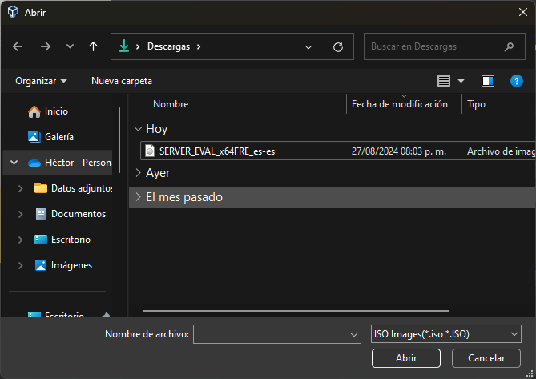

DATA CENTER.
Paso 1: (Abrir VirtualBox).
Comenzaremos abriendo VirtualBox, para asi seleccionar la opción de nuevo, y seleccionar nuestra ISO de windows data center que descargamos.
Paso 2:(Seleccionar ISO DE DATA CENTER).
Una vez seleccionada la opcion "Nuevo" se nos abrira una ventana en la cual seleccionaremos la ISO para asi agregarla.

Paso 3: (Seleccionar hizo para agregarla).
Se nos abrira a ventana de nuestros documentos donde nos mostrara las ISO que tengamos, en este caso seleccionaremos la ISO de DATA CENTER.
Paso 4: (Omitir instalacion desatendida).
Marcamos la opcion de omitir instalacion desatendida y damos en siguiente.
Paso 5: (Memoria y procesadores).
Cambiaremos la memoria base y el numero de procesadores si asi lo deseamos, en este caso dejaremos las especificaciones como las dan.
Paso 6: (Disco virtual).
Al igual que en la memoria, se puede aumentar, pero igualmente en este caso se dejaran como esta por defecto.
Paso 7: (Terminar).
Se nos mostrara una ventana en donde se describe las caracteristicas que escogimos, una vez teniendo todo como lo pusimos, daremos en la opcion de Terminar.
Paso 8: (Ventana de inicio).
Terminando todos los ajustes de la maquina, nos mandara a la pagina de inicio, donde presionaremos en la opcion de iniciar, esto para que finalmentese pueda hacer la instalacion de Windows 11.
Paso 9: (Cargando carpetas).
Dejaremos que se carguen las carpetas.
Paso 10: (Idioma).
Despues de la carga de archivos, nos mostrara otra ventana de idiomas para el S.O, seleccionaremos el esapñol y continuaremos con el siguiente paso.
Paso 11: (Instalar ahora).
Simplemente en esta ventana continuaremos con la siguiente ventana.
Paso 12: (Instalar programa).
Dejaremos que se quite sola la pantalla azul.
Paso 13: (Seleccionar S.O).
Escogemos el S.O que vayamos a ocupar y daremos en siguiente.
Paso 14: (Aceptar terminos y condiciones).
Leeremos y aceptaremos los terminos y condiciones para continuar.
Paso 15: (Tipo de instalacion).
Escogeremos la segunda opcion la cual es personalizada.
Paso 16: (Donde se va a instalar).
Seleccionaremos la opcion de nuevo, y escogeremos el segundo disco.
Paso 17: (Instalando el S.O).
Dejaremos que cargue la instalacion.
Paso 18: (Logo).
Dejaremos que se quite solo la ventana del logo.
Paso 19: (Personalizacion).
Pondremos nuestro nombre de usuario junto con la contraseña.
Paso 20: (Aplicar las configuraciones).
Las configuraciones se cargaran, solo es cuestion de esperar a que la ventana se quite.
Paso 21: (Instalacion completa).
Observaremos que ya esta listo el S.O ya que estamos en la pantalla de blowueo.